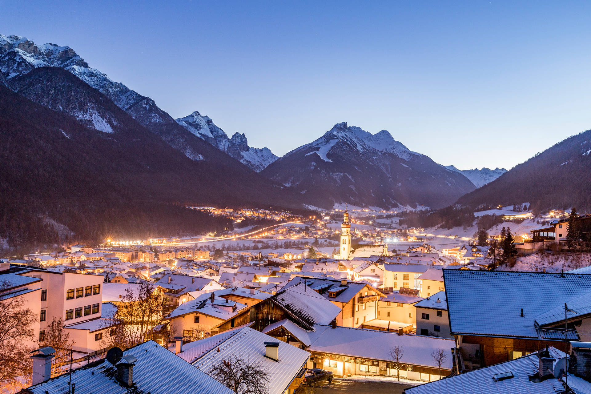

Austria
Austria is a beautiful country in Central Europe, known for its stunning mountains, historic cities, and rich culture. The Alps cover much of the country, offering breathtaking landscapes and popular ski resorts. Vienna, the capital, is famous for its imperial architecture, classical music, and museums. Austria is also known for its traditions, delicious pastries, and festivals. Visitors can explore charming villages, picturesque lakes, and cultural landmarks throughout the country. Whether you enjoy nature, history, or art, Austria has something special to offer for everyone. From the charming streets of Salzburg to the beautiful lakes of Carinthia, Austria offers a wealth of experiences for every traveler. You can enjoy traditional Austrian music, explore historic castles, and savor local culinary delights. The Austrian Alps provide endless opportunities for hiking, skiing, and breathtaking panoramic views throughout the year. Austria’s cities blend modern culture with centuries of history, making it a fascinating destination for all ages.
In addition to its natural beauty and cultural landmarks, Austria is known for its vibrant festivals and events, from classical music concerts to lively folk celebrations. The country’s well-preserved architecture, charming town squares, and scenic countryside invite travelers to explore at a leisurely pace. Whether strolling through the gardens of Schönbrunn Palace, enjoying the serene waters of Lake Wolfgang, or sampling local delicacies such as schnitzel and sachertorte, visitors are sure to find something memorable at every turn. Austria truly combines a rich history, stunning landscapes, and a warm, welcoming atmosphere that captivates all who visit.
